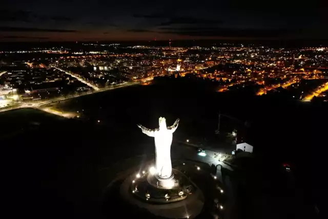
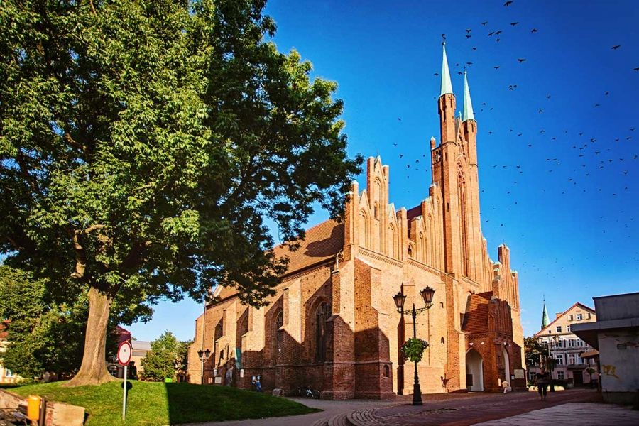
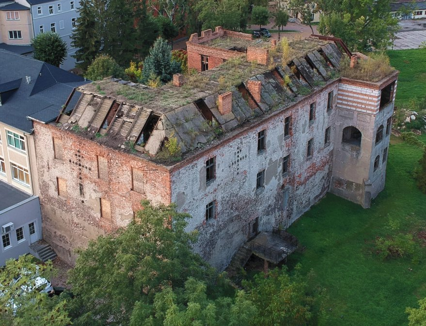

Świebodzin to zabytkowe miasto średniowieczne, które leży w województwie lubuskim na Pojezierzu Łagowskim. Oddalony jest od Gorzowa Wielkopolskiego o 70km, a od Poznania o 112 km.
Jego historia sięga XIV wieku, kiedy na terenie obecnego miasta znajdowała się słowiańska osada, jednak istnieją archeologiczne dowody na istnieje siedzib ludzkich z okresu neolitu i epoki brązu. Pełne prawa miejskie Świebodzin otrzymał w 1469 roku i od tej pory prężnie się rozwijał, głównie jako ośrodek tkactwa i sukiennictwa. Sukno świebodzińskie przez całe późne średniowiecze stanowiło ceniony produkt eksportowy.
Największe zabytki Świebodzina
Kościół św. Michała Archanioła – monumentalna, gotycka świątynia, która wybudowana została w XV wieku. W jego wnętrzach obejrzeć można wspaniały ołtarz, na którym przedstawiona jest scena Ostatniej Wieczerzy oraz wizerunki Matki Boskiej i czterech świętych: św. Rocha, św. Augustyna, św. Andrzeja i św. Marcina.
Zamek joannitów – budowla wybudowana na przełomie XIV i XV wieku, która w późniejszych latach weszła w posiadanie zakonu joannitów i przez nich została rozbudowana. Obecnie gmach należy do Lubuskiego Centrum Ortopedycznego, jednak wciąż można podziwiać wiekowe fasady budynku. W całym mieście można natrafić również na pozostałości średniowiecznych murów obronnych i fosy oraz trzy baszty.